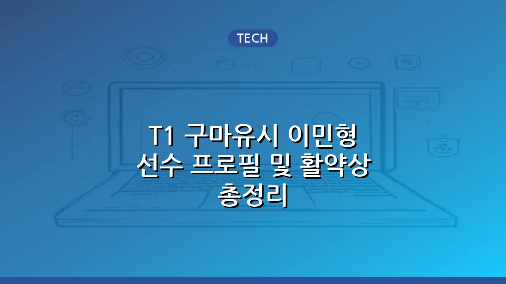

T1 구마유시 이민형 선수 프로필 및 활약상 총정리
T1의 핵심 원거리 딜러이자 리그 오브 레전드 e스포츠의 스타 플레이어인 구마유시(본명 이민형) 선수는 빼어난 실력과 독보적인 매력으로 전 세계 팬들의 사랑을 받고 있습니다. 2023년 리그 오브 레전드 월드 챔피언십(롤드컵) 우승의 주역이기도 한 구마유시 선수는 어린 나이부터 뛰어난 재능을 선보이며 LCK에 혜성처럼 등장했습니다. 이 글에서는 구마유시 선수의 기본적인 프로필부터 T1 데뷔 과정, 인상 깊었던 주요 활약상, 그리고 그만의 특별한 매력까지 심층적으로 다루어보겠습니다.
구마유시(이민형) 선수 기본 프로필
구마유시 선수는 '페이커' 이상혁 선수의 동생으로도 잘 알려져 있으며, 형과 마찬가지로 T1 소속으로 활동하며 팀의 든든한 한 축을 담당하고 있습니다. 그의 기본적인 정보는 다음과 같습니다.
| 구분 | 내용 |
|---|---|
| 본명 | 이민형 |
| 활동명 | GumaYuSi (구마유시) |
| 국적 | 대한민국 |
| 생년월일 | 2002년 2월 6일 |
| 포지션 | 원거리 딜러 (AD Carry) |
| 소속팀 | T1 |
2002년생으로 비교적 어린 나이에 프로 무대에 데뷔했음에도 불구하고, 구마유시 선수는 노련한 경기 운영과 강력한 라인전 능력을 바탕으로 빠르게 정상급 원거리 딜러로 자리매김했습니다. 그의 이름 '구마유시'는 일본어 '마유시(眉氏)'에서 영감을 받았다는 일화가 알려져 있기도 합니다.
T1 데뷔와 주요 경력: 롤드컵 우승까지
구마유시 선수는 T1 연습생으로 입단하여 그 재능을 인정받았고, 2020년 LCK 서머 시즌에 T1 루키 팀에서 콜업되어 데뷔전을 치렀습니다. 초기에는 주전과 서브를 오가며 경험을 쌓았지만, 점차 안정적인 기량과 성장 가능성을 보여주며 팀의 주전 원거리 딜러로 확고히 자리 잡았습니다. 그의 주요 경력과 성과는 다음과 같습니다.
- 2021 LCK 스프링 준우승
- 2022 LCK 스프링 우승 (LCK 역대 최초 전승 우승)
- 2022 리그 오브 레전드 월드 챔피언십 준우승
- 2023 LCK 스프링 준우승
- 2023 리그 오브 레전드 월드 챔피언십 우승
특히 2023년 롤드컵에서는 팀의 핵심 딜러로서 엄청난 활약을 펼치며 T1이 통산 4번째 롤드컵 우승컵을 들어 올리는 데 결정적인 기여를 했습니다. 결승전에서의 침착하고 강력한 플레이는 많은 팬들에게 깊은 인상을 남겼습니다.
구마유시 선수의 플레이 스타일과 강점
구마유시 선수의 플레이 스타일은 '공격적이지만 안정적인' 것으로 평가받습니다. 그는 뛰어난 피지컬을 바탕으로 라인전에서 상대를 압박하는 능력이 탁월하며, 한타 상황에서도 과감한 포지셔닝과 정교한 카이팅으로 팀의 딜링을 책임집니다. 넓은 챔피언 폭 또한 그의 강점 중 하나입니다. 자야, 아펠리오스, 케이틀린 등 다양한 원거리 딜러 챔피언을 능숙하게 다루며 팀의 전략적 유연성을 높여줍니다. 또한, 중요한 순간에 터지는 슈퍼 플레이와 뛰어난 생존력은 그가 왜 T1의 핵심 선수인지 증명하는 대목입니다.
팬들과 소통하는 매력, 그리고 미래
구마유시 선수는 경기 내적인 실력뿐만 아니라, 경기 외적으로도 팬들과 활발히 소통하며 '밈 부자'라는 별명을 얻을 정도로 독특한 매력을 발산합니다. 솔직하고 유쾌한 인터뷰, 재치 있는 SNS 활동, 그리고 팬들에게 진심으로 다가가는 모습은 그를 더욱 사랑받는 선수로 만듭니다. T1의 '막내 라인'으로서 형들과의 케미스트리도 팬들에게 큰 즐거움을 선사합니다. 롤드컵 우승이라는 큰 성과를 이룬 구마유시 선수는 앞으로도 끊임없는 노력과 발전으로 팬들에게 더 많은 감동과 즐거움을 선사할 것으로 기대됩니다. 그의 미래가 더욱 빛날 것으로 확신합니다.
구마유시 선수는 단순한 프로게이머를 넘어 e스포츠 문화를 대표하는 아이콘 중 한 명으로 성장했습니다. 그의 열정과 도전은 앞으로도 많은 이들에게 영감을 줄 것입니다.
🔗 이 글도 함께 보면 좋아요: 팰 월드 패치 노트: 최신 업데이트 내용과 적용 가이드
관련 추천 상품
이 포스팅은 쿠팡 파트너스 활동의 일환으로, 이에 따른 일정액의 수수료를 제공받습니다.